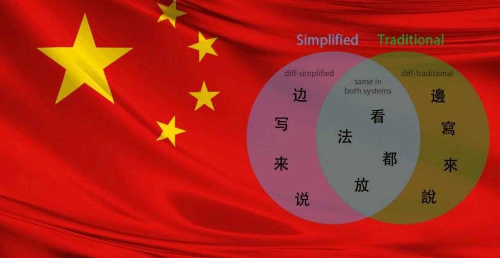
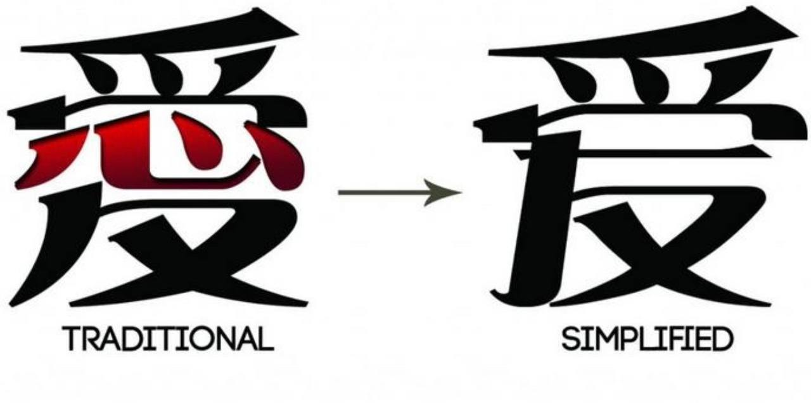

មាតិកា
សេចក្តីផ្តើមនៃវប្បធម៌ (Introduction to Culture)
បណ្តាជនជាតិ និងជនជាតិភាគតិច
សម្លៀកបំពាក់ប្រពៃណី និងទំលៀមទំលាប់
ភាសាតំបន់ និងគ្រាមភាសា
សាសនា ជំនឿ និងពិធីសក្ការៈ
Introduction to Beijing Culture
ទីក្រុងប៉េកាំង (Beijing) មិនត្រឹមតែជាលំនៅឋានរបស់មនុស្សជាតិប៉ុណ្ោះទេ ប៉ុន្តែវាជាបេះដូងនយោបាយ និងវប្បធម៌របស់ប្រទេសចិនដែលមានប្រវត្តិសាស្ត្រជាង ៣,០០០ ឆ្នាំ និងបានធ្វើជាលំនៅឋានរបស់រាជវង្សស្តេចចិន (រាជធានី) អស់រយៈពេលជាង ៨៥០ ឆ្នាំ។ ដូច្នេះ វប្បធម៌ទីក្រុងប៉េកាំង គឺជាការរួមបញ្ចូលគ្នារវាង «វប្បធម៌រាជវាំងដ៏ស្កឹមស្កៃ» និង «វប្បធម៌ប្រជាជនសាមញ្ញតាមផ្លូវលំ (Hutong)»។
- មហាកំផែង និងព្រះបរមរាជវាំងបម្រាម
- ផ្ទះបុរាណស៊ីហឺយាន (Siheyuan)
- ម្ហូបអាហារល្បីឈ្មោះ: ទាក្វាយប៉េកាំង
- ល្ខោនអូប៉េរ៉ាប៉េកាំង (Peking Opera)
- គ្រាមភាសាប៉េកាំង (ការនិយាយបត់អណ្តាត)
- ចរិតលក្ខណៈរួសរាយរាក់ទាក់បែប "Lao Beijing"
Ethnic Groups in Beijing
ទីក្រុងប៉េកាំង គឺជារាជធានីដ៏រស់រវើក និងជាទីក្រុងដំបូងគេបង្អស់នៅក្នុងប្រទេសចិន ដែលមានបណ្តាជនជាតិទាំង ៥៦ ជនជាតិ រស់នៅជួបជុំគ្នា សាមគ្គីគ្នាយ៉ាងចុះសម្រុង។
នៃប្រជាជនសរុបគឺជាជនជាតិភាគតិច (ប្រមាណជាង ១ លាននាក់)
 វប្បធម៌រាជវាំងដ៏ស្កឹមស្កៃ (Imperial Palace)
វប្បធម៌រាជវាំងដ៏ស្កឹមស្កៃ (Imperial Palace)
 ជីវភាពរស់នៅបែបហ៊ូតុង (Hutong Alleys)
ជីវភាពរស់នៅបែបហ៊ូតុង (Hutong Alleys)
បណ្តាជនជាតិ និងជនជាតិភាគតិច
ជនជាតិម៉ាន់ជូ (Manchu)
មានទំនាក់ទំនងប្រវត្តិសាស្ត្រយ៉ាងជ្រាលជ្រៅបំផុត ដោយសារពួកគេជាអ្នកបង្កើតរាជវង្សឈីង (Qing) និងគ្រប់គ្រងរាជធានីចាប់ពីឆ្នាំ១៦៤៤ ដល់ឆ្នាំ១៩១២។

- ការគ្រប់គ្រងប្រទេសចិនទាំងមូលពីទីក្រុងប៉េកាំង
- សំណង់ប្រវត្តិសាស្ត្ររាជវាំង និងសួនច្បារអធិរាជ
- ការបន្សល់ទម្លាប់ប្រចាំថ្ងៃ និងវប្បធម៌រស់នៅ
ជនជាតិភាគតិចហ៊ួយ (Hui)
ជាជនជាតិចិនកាន់សាសនាឥស្លាម ដែលមានទំនាក់ទំនងយ៉ាងស៊ីជម្រៅទាំងផ្នែកប្រវត្តិសាស្ត្រ វប្បធម៌ សាសនា និងម្ហូបអាហារ។

- សហគមន៍ធំប្រមូលផ្តុំនៅតំបន់ Niujie (ញៀវជៀ)
- វិហារឥស្លាមប្រវត្តិសាស្ត្រ Niujie Mosque
- វប្បធម៌ម្ហូបអាហារហាឡាល់ (Halal Food) ដ៏ល្បីល្បាញ
ជនជាតិម៉ុងហ្គោល (Mongolian)
មានចំណងទាក់ទងយ៉ាងស៊ីជម្រៅតាំងពីរាជវង្សយាន (Yuan Dynasty) ទាំងផ្នែកនយោបាយ ព្រំដែន និងការផ្លាស់ប្តូរវប្បធម៌។

- ទំនាក់ទំនងផ្នែកប្រវត្តិសាស្ត្រ និងការរៀបចំក្រុងបុរាណ
- ទំនាក់ទំនងផ្នែកការទូត និងការងារស្ថានទូតនានា
- ការផ្លាស់ប្តូរវប្បធម៌តន្ត្រី និងសាច់ចៀមអាំងបែបម៉ុងហ្គោល
ជនជាតិទូចា (Tujia)
ជនជាតិភាគតិចដ៏ធំមួយរបស់ប្រទេសចិន ដែលមានវត្តមាន និងបង្កើនទំនាក់ទំនងជាមួយរាជធានីភាគច្រើនតាមរយៈ៖

- ការអភិរក្ស និងបង្ហាញសម្បត្តិវប្បធម៌ជាតិ
- ការតាំងពិព័រណ៍សិល្បៈប្រពៃណី និងសកម្មភាពនយោបាយ
- ការបង្ហាញរបាំ និងសិប្បកម្មតាមស្ថាប័នជាតិ
ជនជាតិកូរ៉េ (Korean / Joseonjok)
សំដៅលើជនជាតិភាគតិចកូរ៉េដែលមានសញ្ជាតិចិន និងប្រជាជនកូរ៉េដែលមករស់នៅ ឬធ្វើការនៅក្នុងទីក្រុងប៉េកាំងយ៉ាងសកម្ម។
- ការធ្វើធុរកិច្ច និងការបើកអាជីវកម្មទំនើបៗ
- ការសិក្សាអប់រំនៅតាមសាកលវិទ្យាល័យធំៗ
- ទំនាក់ទំនងវប្បធម៌ទំនើប និងប្រពៃណី (តំបន់ Wangjing)
ជនជាតិទីបេ (Tibetan)
មានទំនាក់ទំនងប្រវត្តិសាស្ត្រ វប្បធម៌ និងនយោបាយដ៏ជ្រាលជ្រៅ ដែលត្រូវបានឆ្លុះបញ្ចាំងយ៉ាងច្បាស់តាមរយៈ៖

- បេតិកភណ្ឌព្រះពុទ្ធសាសនាទីបេ (ដូចជាវិហារ Yonghe Temple)
- ស្ថាប័នសិក្សាជាន់ខ្ពស់ និងការស្រាវជ្រាវជាតិសាសន៍
- ព្រឹត្តិការណ៍វប្បធម៌ និងការផ្លាស់ប្តូរជំនឿសាសនា
Traditional Clothing & Customs
សម្លៀកបំពាក់ប្រពៃណីប៉េកាំងគឺជាបេតិកភណ្ឌវប្បធម៌ដែលកើតចេញពីការរួមបញ្ចូលគ្នារវាង «សម្លៀកបំពាក់រាជវាំងម៉ាន់ជូ (រាជវង្សឆេង)» និង «សិល្បៈច្នៃប្រឌិតរបស់ប្រជាជន» ដែលឆ្លុះបញ្ចាំងយ៉ាងច្បាស់ពីឋានៈសង្គម វណ្ណៈ និងអត្តសញ្ញាណជាតិចិន។
ជនជាតិភាគតិចទាំង ៥ ក្រុមនេះឯងដែលមានសហគមន៍រស់នៅផ្ទាល់ខ្លួនច្បាស់លាស់ និងមានឥទ្ធិពលខ្លាំងលើវប្បធម៌ក្រុង៖
- ជនជាតិម៉ាន់ជូ (Manchu / 满族)
- ជនជាតិហ៊ួយ (Hui / 回族)
- ជនជាតិម៉ុងហ្គោល (Mongolian / 蒙古族)
- ជនជាតិកូរ៉េ-ចិន (Korean / 朝鲜族)
- ជនជាតិទូជា (Tujia / 土家族)
 ការវិវត្តនៃសម្លៀកបំពាក់វែង (Changshan) សម័យរាជវង្សឆេង
ការវិវត្តនៃសម្លៀកបំពាក់វែង (Changshan) សម័យរាជវង្សឆេង
១. ជនជាតិម៉ាន់ជូ (Manchu / 满族) — លំដាប់ទី១
អាវផាយវែងត្រង់ រលុង និងមានកអាវខ្ពស់ លម្អដោយការប៉ាក់ផ្កាភ្ញីយ៉ាងប្រណីតនៅតាមគែមអាវ និងមានពាក់ស្បែកជើងកែងខ្ពស់នៅចំកណ្តាលបាតជើង។
ពិធីការសំខាន់គឺការបែងចែកពណ៌ និងក្បាច់ប៉ាក់ទៅតាមឋានៈវណ្ណៈក្នុងរាជវាំង។

២. ជនជាតិហ៊ួយ (Hui / 回族) — លំដាប់ទី២
បុរសនិយមពាក់មួកពណ៌សរាងមូល (White Cap) ចំណែកឯស្ត្រីប្រើប្រាស់ក្រមា ឬស្បៃគ្របសក់ និងក (Hijab Style) យ៉ាងសុភាពរាបសារ។
ពួកគាត់មានសហគមន៍បុរាណដ៏ធំនៅដងផ្លូវញូជេ (Niujie) កណ្តាលក្រុងប៉េកាំង ដោយគោរពតាមច្បាប់សាសនាឥស្លាមយ៉ាងខ្ជាប់ខ្ជួន។
 ទម្រង់មួកពណ៌សស្អាត និងស្បៃគ្របក្បាលបែបជនជាតិហ៊ួយ
ទម្រង់មួកពណ៌សស្អាត និងស្បៃគ្របក្បាលបែបជនជាតិហ៊ួយ
៣. ជនជាតិម៉ុងហ្គោល (Mongolian / 蒙古族) — លំដាប់ទី៣
អាវផាយវែងក្រាស់ហៅថា «ដឺអ៊ែល» (Deel) មានប៊ូតុងដបនៅចំហៀងខាងស្តាំ ចងខ្សែក្រវាត់ក្រណាត់ធំៗយ៉ាងណែន និងពាក់មួកខ្ពស់ស្រួចការពារធាតុអាកាសត្រជាក់។
ក្នុងពិធីការស្វាគមន៍ភ្ញៀវកិត្តិយស ឬកម្មវិធីប្រពៃណីនៅប៉េកាំង អ្នកដែលស្លៀកឈុតនេះត្រូវកាន់ «កន្សែងសូត្រហាតា» ពណ៌ខៀវហុចជូនភ្ញៀវដើម្បីបង្ហាញការគោរព។
 ឈុត «ដឺអ៊ែល» និងមួកស្រួចប្រពៃណីម៉ុងហ្គោល
ឈុត «ដឺអ៊ែល» និងមួកស្រួចប្រពៃណីម៉ុងហ្គោល
៤. ជនជាតិកូរ៉េ-ចិន (Korean / 朝鲜族) — លំដាប់ទី៤
ហៅថា «ចូសន់អុត» (Choson-ot) (ស្រដៀងខ្លាំងនឹងឈុតហានបុក)។ សម្រាប់ស្ត្រី មានអាវខ្លីចងខ្សែបូវែងនៅខាងមុខ ផ្សំជាមួយសំពត់ប៉ោងវែងចង្កេះខ្ពស់ មានពណ៌ស្រស់ឆើតឆាយល្អឯក។
ពួកគាត់មានសហគមន៍ធំ និងសកម្មខ្លាំងនៅតំបន់វ៉ាងជីង (Wangjing) ក្នុងក្រុងប៉េកាំង ដែលជាមជ្ឈមណ្ឌលពាណិជ្ជកម្មកូរ៉េទំនើប។
 ឈុត «ចូសន់អុត» ពណ៌ស្រស់ឆើតឆាយរបស់ស្ត្រីកូរ៉េ-ចិន
ឈុត «ចូសន់អុត» ពណ៌ស្រស់ឆើតឆាយរបស់ស្ត្រីកូរ៉េ-ចិន
៥. ជនជាតិទូជា (Tujia / 土家族) — លំដាប់ទី៥
អាវខ្លីគ្មានក ឡេវអាវនៅចំហៀងខាងស្តាំ និយមប្រើពណ៌ខៀវក្រម៉ៅ ឬបៃតង និងមានស្បៃចងក្បាល ឬមួកក្រណាត់ខ្មៅតុបតែងលម្អផ្កាភ្ញី។
ពិធីការនៃការស្លៀកពាក់ឈុតនេះ គឺស្តែងឡើងយ៉ាងរស់រវើកនៅក្នុងពិធីការរាំក្បាច់ប្រពៃណី និងបុណ្យទាននានាដែលយកមកបង្ហាញក្នុងរាជធានី។
 សម្លៀកបំពាក់ប៉ាក់ក្បាច់ និងគ្រឿងតុបតែងក្បាលជនជាតិទូជា
សម្លៀកបំពាក់ប៉ាក់ក្បាច់ និងគ្រឿងតុបតែងក្បាលជនជាតិទូជា
Language & Dialects
៤.១. ប្រវត្តិ និងភាសាតំបន់សំខាន់ៗ
ប្រវត្តិភាសាចិនមានអាយុកាលជាង ៣,០០០ ឆ្នាំ និងជាភាសាមួយដែលមានអរិយធម៌ចាស់ជាងគេបំផុតនៅលើពិភពលោក។ ជនជាតិចិនមានភាសាតំបន់ជាច្រើន ដែលខុសគ្នាតាមតំបន់នីមួយៗ ដូចជា៖
ភាសាចិនស្តង់ដារដែលគេហៅថា 普通话 (Mandarin) ត្រូវបានគេប្រើប្រាស់ជាភាសាផ្លូវការនៅប្រទេសចិន និងប្រើប្រាស់យ៉ាងទូលំទូលាយនៅប្រទេសសិង្ហបុរី និងកោះតៃវ៉ាន់ផងដែរ។
៤.២. ភាសាសរសេរ (Written Language)
ប្រព័ន្ធសរសេរអក្សរចិន មានទម្រង់សរសេរធំៗចំនួន ២ គឺ៖
- តួអក្សរចិនសាមញ្ញ (Simplified Chinese): ប្រើប្រាស់ជាទូទៅនៅប្រទេសចិនដីគោក។
- តួអក្សរចិនបុរាណ (Traditional Chinese): នៅតែបន្តប្រើប្រាស់នៅតំបន់កោះ Taiwan, Hong Kong និង Macau។


៤.៣. ភាសានិយាយ និងគ្រាមភាសាប៉េកាំង
នៅក្នុងការនិយាយ ប្រជាជនចិនតែងបន្ថែមសំឡេង ឬពាក្យខ្លីៗនៅចុងល្បះ ដើម្បីឲ្យការនិយាយស្តាប់ទៅទន់ភ្លន់ ធម្មជាតិ និងបង្ហាញអារម្មណ៍គួរសម។ ពាក្យទាំងនេះហៅថា “语气词” (yǔqìcí)។ ពាក្យដែលគេប្រើប្រាស់ញឹកញាប់រួមមាន៖ 啊 (a), 吗 (ma), 吧 (ba)។
🎨 លក្ខណៈពិសេសរបស់អ្នកទីក្រុងប៉េកាំង៖ “儿化音” (Erhua)
នៅទីក្រុង Beijing ប្រជាជនភាគច្រើននិយាយភាសា Mandarin ប៉ុន្តែការនិយាយមានការបត់អណ្តាតបន្ថែមសំឡេង “儿” (ér) នៅចុងពាក្យ ធ្វើឲ្យការនិយាយស្តាប់ទៅរហ័ស និងមានធម្មជាតិបំផុត។
💡 សម្គាល់៖ ជនជាតិចិនភាគច្រើនប្រើប្រាស់ភាសាចិនជាភាសាសំខាន់ក្នុងជីវភាពប្រចាំថ្ងៃ ហើយភាគច្រើនប្រើប្រាស់នៅតាមសាលារៀន ការងារ អន្តរជាតិ ឬតំបន់ទេសចរណ៍ផ្សេងៗ។
Culture & Religion
៥. តើប្រជាជននៅទីក្រុងប៉េកាំងមានជំនឿលើសាសនាអ្វីខ្លះ?
ប្រជាជនចិននៅទីក្រុងប៉េកាំងមានជំនឿ និងកាន់សាសនាចម្រុះគ្នាជាច្រើន ដោយសារតែទីក្រុងនេះជាមជ្ឈមណ្ឌលវប្បធម៌ និងប្រវត្តិសាស្ត្រដ៏ធំ។ ហេតុដូចនេះហើយ ប្រជាជនភាគច្រើនមិនផ្តោតទៅលើសាសនាតែមួយដាច់ខាតនោះទេ ប៉ុន្តែពួកគេអនុវត្តតាម "សាសនាប្រជាប្រិយចិន" (Chinese Folk Religion)។
☯️ ឥទ្ធិពលរួមបញ្ចូលគ្នាដ៏ខ្លាំងក្លាបំផុត (The Three Teachings)
វប្បធម៌ស្នូលរបស់អ្នកក្រុងប៉េកាំង គឺការរួមបញ្ចូលគ្នារវាងទស្សនវិជ្ជា និងសាសនាធំៗចំនួន ៣៖
៥.១. សាសនាព្រះពុទ្ធ & ៥.២. សាសនាតៅ
នេះជាសាសនាផ្លូវការដែលមានអ្នកប្រតិបត្តិ និងសកម្មជនវប្បធម៌ច្រើនជាងគេបំផុតនៅទីក្រុងប៉េកាំង។ ប្រជាជនតែងតែទៅទីនោះដើម្បីបន់ស្រន់សុំសេចក្តីសុខ និងលាភសំណាង។
- វត្តឡាម៉ា (Yonghe Temple): មជ្ឈមណ្ឌលពុទ្ធសាសនាបែបទីបេដ៏ល្បីល្បាញ។
- វត្តហ្វាយួន (Fayuan Temple): វត្តចាស់បុរាណដ៏មានឥទ្ធិពល។
សាសនាតៅគឺជាសាសនាដើមកំណើតពិតៗរបស់ចិន ដែលផ្តោតលើការរស់នៅដោយចុះសម្រុងនឹងធម្មជាតិ និងតុល្យភាពយិន-យ៉ាង (Yin-Yang) នៅក្នុងសកលលោក។
- វិហារពពកស (White Cloud Temple): ជាមជ្ឈមណ្ឌលជាតិដ៏សំខាន់បំផុតមួយនៃសាសនាតៅផ្នែកខាងជើងប្រទេសចិន។
៥.៣. លទ្ធិខុងជឺ (Confucianism)
ទោះបីជាត្រូវបានចាត់ទុកជា ប្រព័ន្ធទស្សនវិជ្ជា និងសីលធម៌ ច្រើនជាងសាសនាដាច់ដោយឡែកក៏ដោយ ប៉ុន្តែវាជាឫសគល់វប្បធម៌ដែលជនជាតិចិននៅប៉េកាំង គោរពប្រតិបត្តិខ្លាំងបំផុតនៅក្នុងជីវិតរស់នៅប្រចាំថ្ងៃ។
💡 ការអនុវត្តសីលធម៌ក្នុងសង្គម៖
🏛️ ភស្តុតាងវប្បធម៌៖ ទីក្រុងប៉េកាំងជាទីតាំងឈរជើងនៃ វិហារខុងជឺ (Temple of Confucius) ដ៏ធំធេង និងមានអាយុកាលរាប់រយឆ្នាំ។